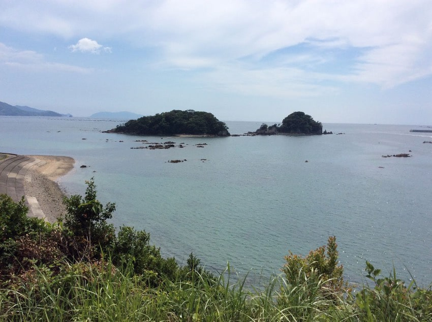

四国の西南端、宿毛湾に面した宿毛市は、日本の夕日100選にも選ばれた「だるま夕日」が見られることで有名な街。古くは九州と四国の経済・文化の接点となる、にぎやか街でした。
昭和26年、菱田ベ―カリーはここで創業しました。
現社長の菱田喜久治は、それまで営んでいた呉服屋をあきらめ廃業を決意しました。戦時中、軍部の金属類の供出令により「針」も「糸」も供出されてなくなり、縫い子さんもみな解雇せざるを得なかったのです。そこで、配給の小麦を使ってパンを焼くことで生計を立てようと決意し、パン屋を始めます。当時、この地域に競合が8社もあり、販売には苦労しましたが、家族一丸となって競争に生き残りました。
昭和40年代初頭に学校給食が始まりました。また、40年代後半には洋食化が進んで、学校だけでなく家庭や喫茶店などでもパンが食べられるようになり、食パンの売り上げが急速に伸びていきました。工場も移転し設備も充実させていきます。
その後、大型スーパーなどの進出により大手メーカーのパンが普及し、製造量は激減しますが、地元パンメーカーとして学校やスーパーなどでその後も地域に根付いて営業してきました。